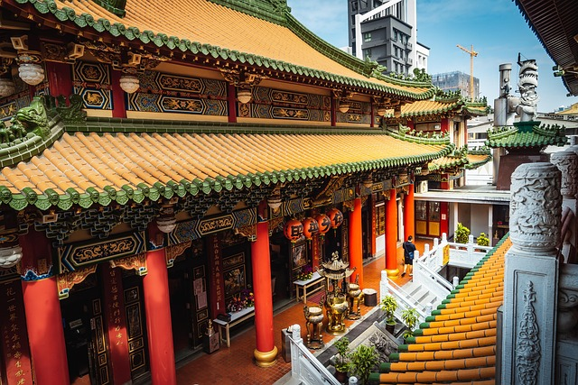

Taiwan

Chiang Kai-shek Memorial Hall, Taipei:
The Chiang Kai-shek Memorial Hall is a famous landmark in Taipei, built in honor of Taiwan’s former president.
Surrounded by beautiful gardens and traditional Chinese architecture, it features a grand white building with
a blue octagonal roof and a large public plaza used for ceremonies and events.

Taipei City:
Taipei, the capital of Taiwan, is a bustling modern city known for its night markets, street food, and vibrant culture.
Home to the iconic Taipei 101 skyscraper, the city blends traditional temples, high-tech innovation,
and beautiful natural scenery like Elephant Mountain and hot springs.

Kaohsiung Temple (Fo Guang Shan):
Fo Guang Shan is one of the largest Buddhist temple complexes in Taiwan, located near Kaohsiung City.
It features a massive Buddha statue, peaceful gardens, and spiritual halls. Visitors can explore the grounds,
learn about Buddhism, and enjoy the serene atmosphere.
Image by Pixaday